AI 深度研究報告：AI 幫你查，你來把關
資訊科技與應用 AA 作業。題目自己選，讓 AI 的深度研究（Deep Research）幫你查資料、寫初稿；你負責三件 AI 做不好的事：把問題問清楚、一筆一筆回原文查證、改成正式的 Word 報告。
完成線：用範本做出 報告.docx，再匯出 報告.pdf，兩個檔交到 e學苑。到期 2026/10/19（一）12:00，以 e學苑 作業頁為準。
只用公開資料。不要把自己或別人的姓名、學號、電話打進 AI；封面最後在 Word 裡自己填。
1. 要交什麼（先看這張表）
| 項目 | 要求 |
|---|---|
| 檔案 | 報告.docx 和 報告.pdf 兩個檔 |
| 前面四頁 | 封面、目錄、圖目錄、表目錄各自獨立一頁（範本已經分好） |
| 圖 | 5 張以上，都用「插入標號」加圖說，數字要說得出從哪裡來 |
| 表 | 3 張以上，都用「插入標號」加表說 |
| 交互參照 | 正文至少一句「如圖 N 所示」，用「交互參照」插入 |
| 來源 | 至少 6 筆你自己點開確認過的來源，用 Word 的引文＋書目（APA） |
| 字數 | 正文（第一章到第五章）4,500–5,500 字 |
| 用語 | 繁體中文、台灣用語 |
| 顏色 | 文字全部黑色，不用彩色字、螢光筆；圖片不限 |
| 附錄一 | 3 句重要的話回原文核對；至少找出 1 處 AI 寫錯的地方，正文也改掉 |
| 附錄二 | AI 使用說明：用哪個工具、研究需求原文、計畫改了什麼、兩張截圖、哪些是你自己做的 |
改了圖表順序以後全選按 F9，目錄、圖目錄、表目錄和「如圖 N」都要跟著變，才算是自動的。
2. 先寫好研究需求，再按送出
深度研究的免費次數有限，跑一次要好幾分鐘，所以先把需求寫好再送出，別邊跑邊想。
- 選題：任何你有興趣的題目都可以。用 W6 的方法把它縮成一句問得出答案的問題：有對象、有範圍（地點、時間）、查得到資料。
- 寫研究需求：不用照固定格式，但要讓 AI 知道這六件事：
- 你要回答的問題（一句話）
- 範圍：哪裡、哪段時間、哪些對象
- 用途：大學課堂報告
- 資料從哪裡來：官方統計、政府報告優先，新聞只當輔助
- 輸出：繁體中文、台灣用語、大約 5,000 字、分成哪幾章；可以畫成圖表的數字整理成表格；每個數字附來源連結和年份
- 查不到就說查不到，不要推估或編造數字
老師的示範，題目是「花蓮觀光在 0403 地震後恢復了多少？」。這段只是示範，請換成你自己的題目和範圍，不要照抄：
我要寫一份大學課堂的研究報告，題目是：花蓮觀光在 2024 年 4 月 3 日地震後恢復了多少？
請幫我研究三件事：
1. 地震前（2023 年）和地震後（2024 年 4 月到 2026 年）花蓮的遊客人數與住宿變化，特別是太魯閣國家公園。
2. 政府做了哪些振興措施（例如住宿補助、交通改善），有沒有效果。
3. 哪些部分已經恢復、哪些還沒有，原因是什麼。
資料以交通部觀光署、花蓮縣政府、太魯閣國家公園管理處的官方統計為主，新聞只當輔助；每個數字都要附來源連結和資料年份。
報告用繁體中文、台灣用語，大約 5,000 字，分成：前言、背景、研究發現、討論與限制、結論。可以畫成圖表的數字請整理成表格。
查不到的資料請直接寫查不到，不要推估或編造數字。六件事都在裡面：第一行是問題和用途，1–3 是範圍，「資料以……為主」是來源，「報告用……」是輸出，最後一行是查不到怎麼辦。
3. 用 Gemini 跑深度研究（建議走這條）
用學校帳號（@gms.ndhu.edu.tw）。老師 10/12 用學校帳號實際跑過一次，畫面最下方寫著「國立東華大學」的對話不會用來改良 Google 模型。
步驟 1｜打開 Deep Research
到 https://gemini.google.com，用學校帳號登入（左下角會顯示「教育帳戶」）。按輸入框左邊的「＋」→「更多工具」→「Deep Research」。
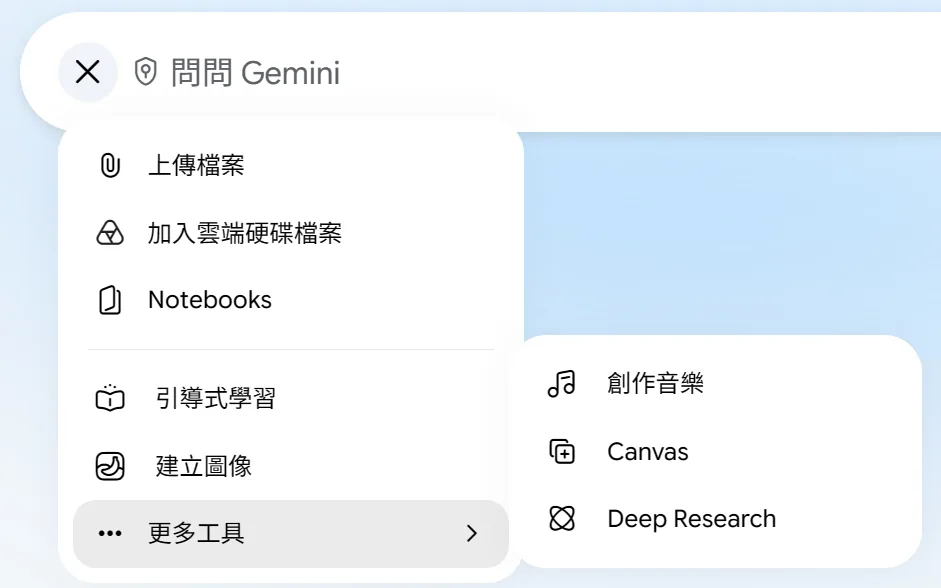
你應該看到輸入框裡出現「Deep Research」標籤，提示字變成「你想研究什麼？」。
步驟 2｜貼上研究需求、送出
把第 2 節寫好的需求貼進輸入框，按右邊的箭頭送出。
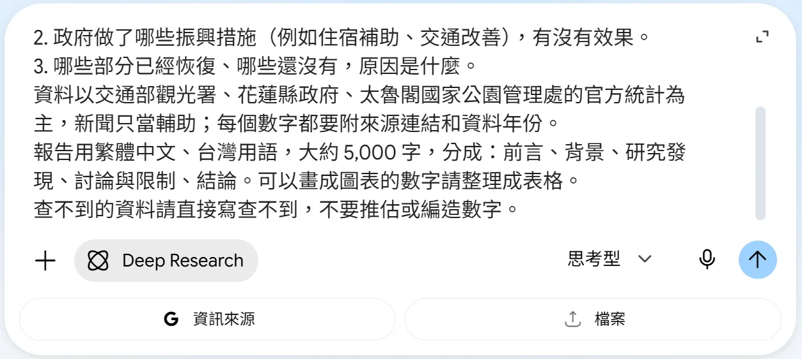
步驟 3｜研究計畫出來了，馬上決定要不要改
大約 20–40 秒後，Gemini 會列出研究計畫，下面有「修改方案」和「开始研究」兩個按鈕。介面有時會跑出簡體字，不影響使用。
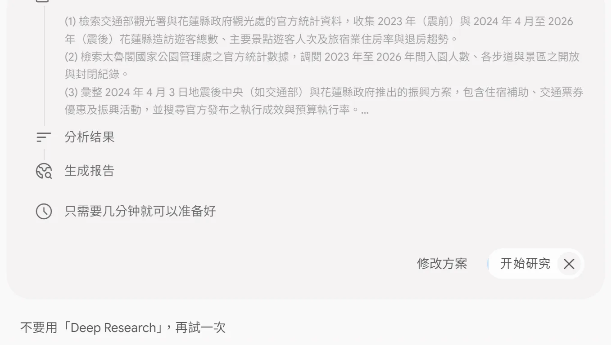
「开始研究」外面有一圈在倒數：大約一分鐘內不動它，它就自己開始。要改計畫就馬上按「修改方案」；想先慢慢看，按旁邊的 ✕ 停掉倒數。
步驟 4｜修改方案（至少試著改一處）
按「修改方案」，它會問「你想更動哪些地方呢？」。直接在輸入框打要改的地方，送出。老師的示範打的是：
請加上 2019 年（疫情前）的遊客人數當比較基準；臉書貼文和網友留言不要當來源。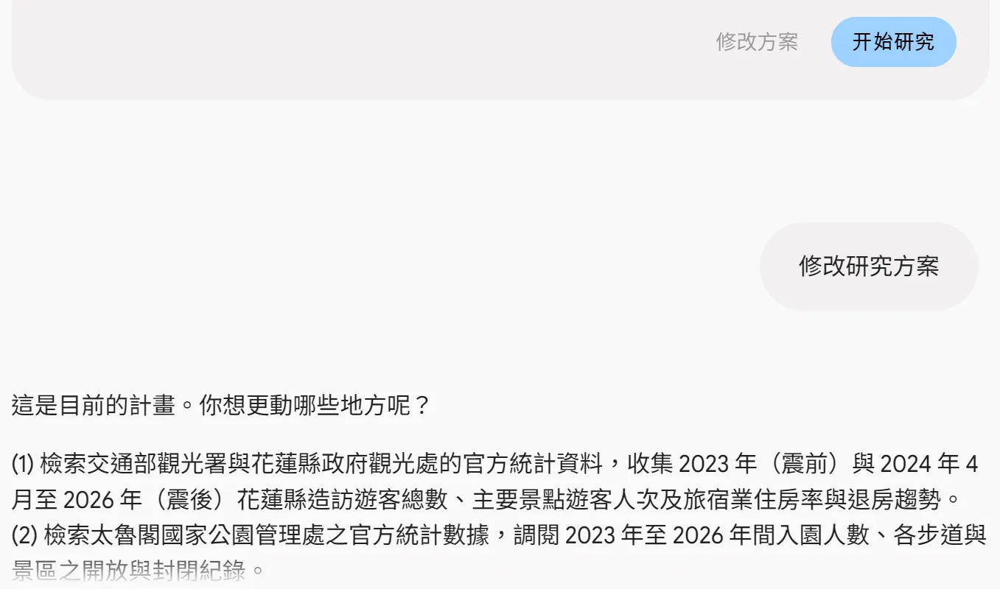
你應該看到新的計畫把你的修改加進去了（示範裡多了「2019 年（疫情前）」）。接著按「开始研究」，或等它自己開始。
來不及改、它已經自己開始了也沒關係：不用重跑，在附錄二寫你本來想改什麼，不扣分。
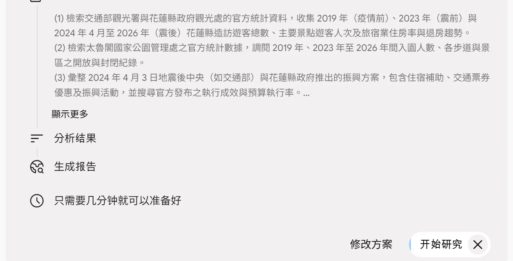
把「改了什麼」記下來，再截兩張圖（你送出的需求、改過的計畫），附錄二要用。截圖：Win＋Shift＋S。
步驟 5｜等它研究
右邊會即時列出它在看哪些網站。可以先去做別的事，好了它會通知你；老師的示範大約跑了 8 分鐘。
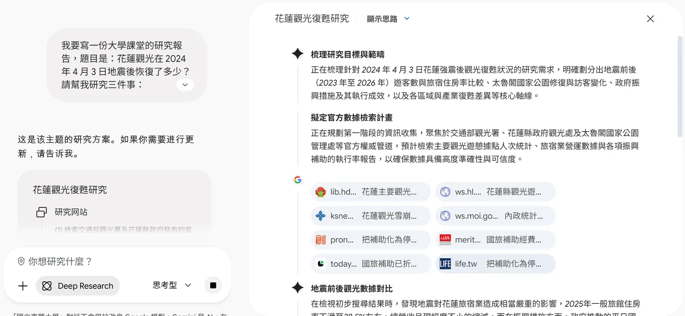
步驟 6｜匯出到 Google 文件
完成後，右邊是整份報告。按右上角「分享及匯出」→「匯出到 Google 文件」。
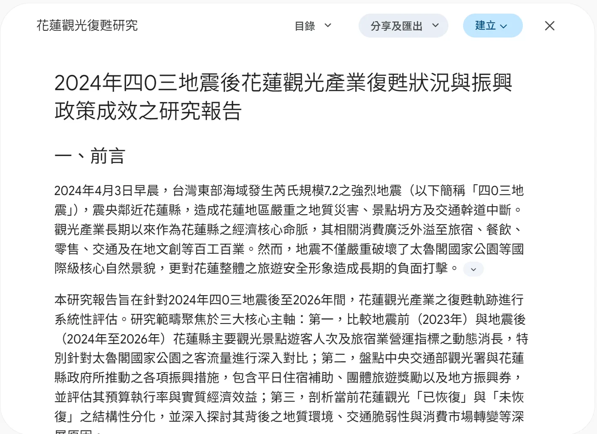
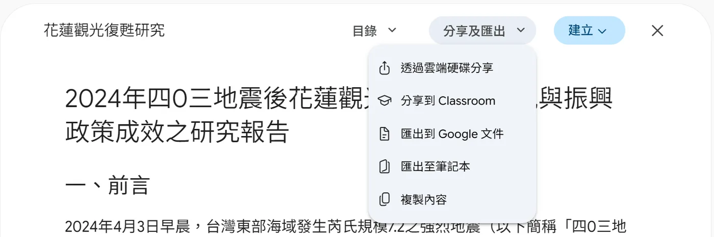
你應該看到左下角跳出「已建立新文件」。到 https://docs.google.com 找剛建立的那份，檔名是報告的簡稱（示範是「花蓮觀光復甦研究」）。
步驟 7｜下載成 Word
在 Google 文件按「檔案 → 下載 → Microsoft Word (.docx)」。
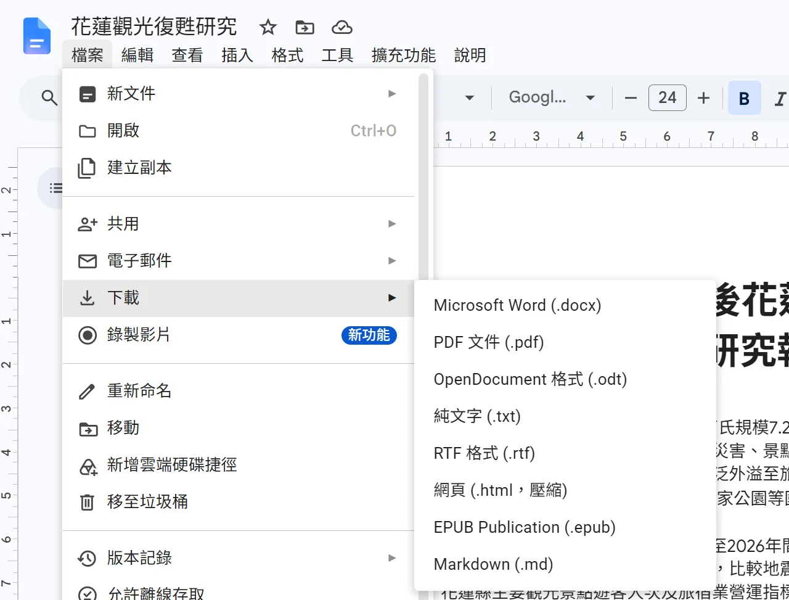
你應該看到下載的 .docx 裡，標題已經是「標題 1」；引用是句尾的上標小數字（例如「百工百業¹」）；文件最後是一串編號的來源清單。
4. 用 ChatGPT 跑深度研究（備用）
- 到 https://chatgpt.com 登入。免費帳號通常也看得到深度研究，但次數有限。
- 按輸入框左邊的「＋」→「深度研究 取得詳細報告」。
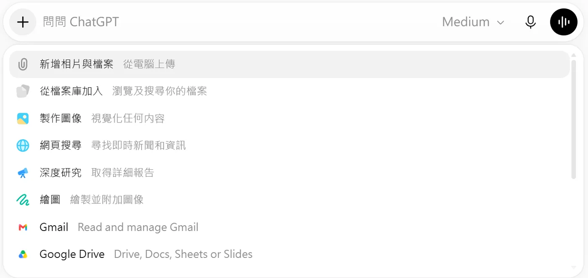
你應該看到輸入框出現藍色的「深度研究」標籤。（沒登入時，左邊選單寫的是「深入研究」。你的選單項目可能比圖上少幾個。）
- 貼上研究需求，送出。
老師 10/12 晚上試了三次，ChatGPT 都回「研究服務回傳內部錯誤」，沒有真的開始研究。你遇到同樣的回覆，就晚一點再試，或直接改用 Gemini，不會因此扣分。
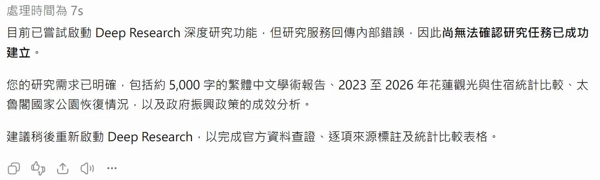
跑成功的話，把報告正文複製下來，接第 5 節。老師這次沒跑成功，跑完之後的畫面以你看到的為準。
不要下載或繳交 ChatGPT 給的 Word 檔：10/10 實測過，用 Word 打開會說檔案損毀。把文字貼進範本。
5. 把 AI 報告改成正式 Word 報告
這一節的 Word 功能 W5 都學過；忘了就看 W5 學生頁 第 3 節。選單名稱照中文版 Word 寫。
步驟 1｜下載範本、另存新檔
下載 報告範本_深度研究.docx，用 Word 打開（上方出現「受保護的檢視」就按「啟用編輯」），「檔案 → 另存新檔」，檔名改成 報告.docx。
你應該看到範本剛下載時有 8 頁：封面、目錄、圖目錄、表目錄、正文五章、參考文獻、附錄一、附錄二，每一塊都從新的一頁開始；貼進正文和圖表以後頁數會變多。【】是要換掉的地方。範本全份都是黑色字，你的報告也一樣。
步驟 2｜把 AI 的文字貼進正文
- 打開第 3 節下載的 .docx（或 ChatGPT 的文字），選起報告正文，按 Ctrl＋C。最後的來源清單先不要複製。
- 回到範本，從「一、前言」選到「五、結論」底下那段【】（正文五章整塊），按 Delete。
- 「常用 → 貼上」下面的箭頭 →「只保留文字」。
你應該看到貼進來的字沒有任何格式，上標的引用數字變成普通數字黏在句尾（例如「百工百業1。」）。
字變成彩色或網址變成藍色底線：網址按右鍵 →「移除連結」；其他字選起來，「常用 → 字型色彩」選「自動」。
步驟 3｜套標題樣式
章名（一、前言……）套「標題 1」，小節（（一）（二）……）套「標題 2」：點一下那一行，在「常用 → 樣式」選。
你應該看到「檢視」勾「功能窗格」，左邊列出你的每一章、每一節。
步驟 4｜控制字數
選起第一章標題到第五章最後一段（不含參考文獻和附錄），看左下角的狀態列，或「校閱 → 字數統計」的「字數」，要在 4,500–5,500 之間。太長就刪重複的段落和形容詞，別刪數字的出處。
步驟 5｜把引用數字換成正式引文
AI 的引用數字只是普通的字，不會跟著 Word 變。每一處都這樣處理：
- 找到那個數字對應 AI 來源清單的哪一筆，點開網址，確認那句話真的在裡面。
- 確認過的：刪掉數字，游標放在句尾，「參考資料 → 插入引文 → 新增來源」，「來源類型」選「網站」，再填作者（或機構）、名稱、年份、網址。同一筆來源再引一次時，「插入引文」直接選它。
- 查不到、或原文沒那樣說的：改寫句子，或整句刪掉。
- 最後到「參考文獻」那頁，選起【】那段按 Delete，「參考資料 → 書目 → 插入書目」，樣式選 APA。
你應該看到正文句尾出現 (作者, 年份)，參考文獻頁列出你的來源，至少 6 筆。
臉書貼文、網友留言、內容農場不算來源。老師的示範明明寫了「官方統計為主」，Gemini 列的 22 筆裡只有 3 筆是政府網站，還有 2 筆是臉書貼文。
步驟 6｜表（3 張以上）
AI 報告裡的表格貼成純文字後會散掉，用「插入 → 表格」重做。點表格任一格，「參考資料 → 插入標號」，標籤選「表」（清單裡沒有就按「新增標籤」），位置選讓表說在表格上方的那一項。
步驟 7｜圖（5 張以上）
每張圖都要說得出數字從哪裡來。兩種做法：
- 自己畫：把報告裡有出處的數字（例如表格）貼進 Excel，「插入 → 圖表」，複製後貼到 Word。
- 截官方圖表：用 Win＋Shift＋S 截政府網站或報告裡的圖，貼到 Word。
插好以後點圖片，「參考資料 → 插入標號」，標籤選「圖」，位置選圖片下方；圖說後面寫資料來源，例如「圖 2 花蓮縣旅館住房率（資料來源：交通部觀光署）」。每張圖按右鍵「檢視替代文字」，寫一句這張圖在說什麼。
AI 生成的示意圖可以放，但圖說要寫「AI 生成示意圖」，不能拿來當數字的證據。別用 AI 畫的統計圖：10/10 實測抓到過，圖上的百分比是 AI 自己編的。
步驟 8｜交互參照
正文至少一句「如圖 N 所示」：先打「如」→「插入 → 交互參照」，「參照類型」選「圖」，「插入參照類型的」選「僅標籤及數字」，點你的圖 →「插入」，關掉對話框，接著打「所示」。
步驟 9｜改成台灣用語
AI 常混進簡體字或大陸用語（示範時 Gemini 的按鈕就寫「开始研究」「研究网站」）。用 Ctrl＋H 找出來改，例如：數據→依意思改成數字或資料、視頻→影片、信息→資訊、質量→品質、網絡→網路、軟件→軟體、默認→預設。
步驟 10｜三份目錄、全部更新
- 目錄、圖目錄、表目錄三頁範本已經分好，不用動。自己要換頁時用「插入 → 分頁符號」或 Ctrl＋Enter，不要按一堆 Enter 把字推下去。
- Ctrl＋A 全選，按 F9；跳出「更新目錄」就選「更新整個目錄」→ 確定（有兩三份目錄就會問兩三次）。
你應該看到第 2 頁是目錄、第 3 頁是圖目錄（至少 5 行）、第 4 頁是表目錄（至少 3 行），每一行都有頁碼。
- 測一次：先按 Ctrl＋S 存檔。把一張圖連同它的圖說一起剪下，貼到另一張圖的圖說後面，再全選按 F9，圖目錄和「如圖 N」都跟著變才對。測完關掉檔案、選「不要儲存」，重新打開就回到測之前的樣子。
步驟 11｜匯出 PDF
「檔案 → 匯出 → 建立 PDF/XPS」，檔名 報告.pdf。按「選項」，勾「使用下列項目建立書籤」、選「標題」→ 確定 →「發佈」。
6. 查證（附錄一）
這是整份作業最重要的一步。AI 的報告讀起來很像真的，只有回到原文才知道對不對。
- 挑 3 句最重要的話，通常是帶數字的那幾句。
- 點開它給的來源，找到原文那一段。PDF 可以用 Ctrl＋F 搜那個數字。
- 填附錄一的表：報告原句、來源（網址＋查得日期）、原文怎麼說、判斷（對／誇大／原文沒有／過時）。
- 寫出至少 1 處 AI 寫錯的地方：原本寫什麼 → 你查到什麼 → 改成什麼，正文也要真的改掉。
老師的示範：一句看起來很可靠的話
Gemini 寫：「根據內政部及交通部觀光署統計，2023年（112年）太魯閣國家公園全年度到訪遊客數高達248.93萬人次，占全台國家公園總遊客人次之14.68%，位居全台灣所有國家公園第二位。」它附的來源是內政部的〈內政統計通報〉，官方資料，看起來沒問題。
打開那份 PDF（內政部統計處，112 年第 46 週，2023 年 11 月 17 日發布）：標題寫的是「112年1-9月國家公園遊客到訪人數」，內文寫「本期國家（自然）公園遊客計1,695.73萬人次，以陽明山國家公園716.53萬人次（占42.25％）最多，太魯閣國家公園248.93萬人次（占14.68％）次之」。
| 報告原句 | 來源 | 原文怎麼說 | 判斷 |
|---|---|---|---|
| 2023 年太魯閣「全年度」248.93 萬人次，占 14.68%，第二 | 內政部統計處（2023）。內政統計通報 112 年第 46 週。查得 2026-10-12 | 248.93 萬、14.68%、第二都對，但統計期間是 112 年 1–9 月 | 誇大：數字對，期間寫錯了 |
改法：改成「2023 年 1–9 月，太魯閣國家公園遊客 248.93 萬人次」；要用全年的數字，就另外去找觀光署的全年統計。
這種錯最難抓：數字是真的、來源也是真的，只有「全年度」三個字是錯的。報告後面還拿這個數字跟 2024 年全年比，比較結果也跟著錯了。
7. 交件前檢查
到 e學苑 這份作業交 報告.docx 和 報告.pdf。交之前一項一項勾（勾選只存在你自己的瀏覽器裡）：
8. 卡住怎麼辦
Gemini 的「更多工具」裡沒有 Deep Research
確認登入的是學校帳號（左下角寫「教育帳戶」）。個人 Gmail 帳號也可以試；還是沒有，就改走 ChatGPT（第 4 節）。
研究自己開始了，來不及改計畫
不用重跑，次數有限。在附錄二寫「它自己開始了，我本來想改……」，一樣算數。
按鈕或回覆變成簡體字
是介面的問題，不影響使用。但報告內容一定要改成繁體中文、台灣用語（第 5 節步驟 9）。
次數用完了
Gemini 用完就換 ChatGPT，反過來也一樣。兩邊都用完了，寫信或在課堂上跟老師說，不會扣分。
ChatGPT 說「工具錯誤」「內部錯誤」，沒有開始研究
晚一點再試一次，或改用 Gemini。這不是你操作錯。
跑了很久還沒好
深度研究通常要 5 到 15 分鐘。可以先關掉頁面，好了會通知；之後從 Gemini 左邊的對話紀錄點回來。
貼進 Word 以後滿滿的 **、# 符號
那是 Markdown 的記號，用「只保留文字」貼上也不會消失。用 Ctrl＋H 清掉：「尋找目標」打 **，「取代為」留空，按「全部取代」；# 照做一次。
AI 給的 .docx 打不開，或說檔案損毀
不要交那個檔。把文字複製出來，貼進範本。
圖目錄寫「找不到圖表目錄項目」
圖說不是用「插入標號」做的，或標籤不是「圖」。刪掉手打的圖說，用「參考資料 → 插入標號」重做，再全選按 F9。
號碼變成 { SEQ 圖 \* ARABIC } 這種大括號
按 Alt＋F9 切回來。這個鍵只切換顯示，不會更新號碼。
字數怎麼算都不對
確認只選了第一章到第五章，沒選到參考文獻和附錄。Word 的「字數」把一個中文字算一個字、一個英文單字算一個字。
教室電腦打不開 Word，或我只用 Google 文件
可以用 Google 文件做，但它沒有自動的圖說編號和交互參照，這兩項要用 Word 才算數。最後在 Word 裡補做這兩項，再交。